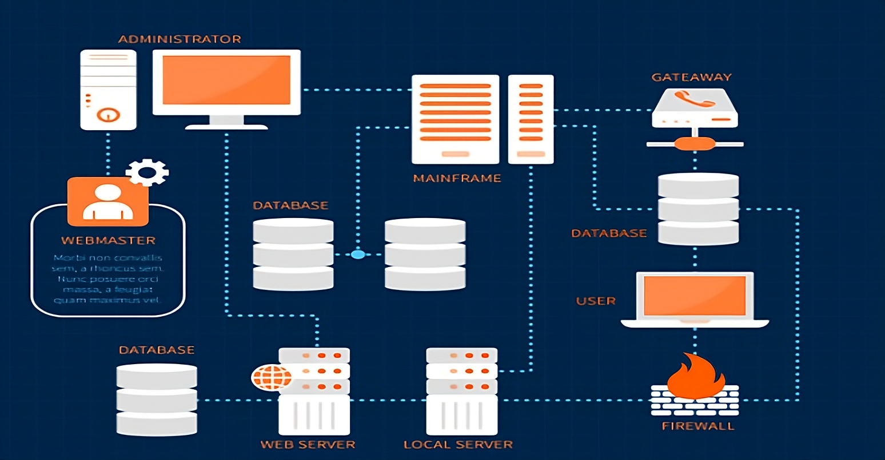

¿Que es la Infraestructura de TI?
La Infraestructura de TI (Tecnologia de la Informacion), es aquel conjunto de componentes que constituyen la base de un servicio de TI, como los componentes fisicos (Hardware, Redes, y las Instalaciones de Computadoras), y componentes internos (Software y Componentes de Red)
¿Que podes hacer con la Infraestructura de TI?
A la Infraestructura de TI se la define como aquel conjunto de elementos que abarca Hardware, Softwares, Redes, Instalaciones, y mas, con los cuales los usuarios y/o empresas pueden realizar muchas cosas como desarrollar, probar, entregar, supervisar, controlar y darle soporte a todos los servicios de TI.

¿Cómo funciona la infraestructura de TI?
La infraestructura de TI tiene componentes de hardware, como ordenadores y servidores, que dependen de componentes de software, como sistemas operativos, para funcionar. Trabajando juntos, estos componentes permiten una amplia gama de servicios y capacidades de TI.
Componentes clave de la infraestructura de TI
Los recursos de TI suelen clasificarse en dos grupos: hardware y software. Eche un vistazo más de cerca a las características de cada uno.
- Componentes de hardware: Son la base física de la infraestructura de TI. Incluyen servidores, enrutadores, almacenamiento, firewalls y también los dispositivos del usuario final como computadoras y móviles, que permiten compartir datos y recursos dentro de una organización.
- Componentes de software: Permiten gestionar y operar los recursos de TI. El sistema operativo actúa como plataforma para aplicaciones importantes como CMS, ERP o CRM. Entre las aplicaciones de infraestructura más usadas están SAP, Salesforce y HubSpot, entre otras.

¿Por qué es importante la gestión de la infraestructura IT?
La Gestión de Infraestructura de IT es clave porque garantiza que los sistemas y tecnologías de los que depende una empresa estén siempre disponibles, protegidos y funcionando como se espera.
Sin una gestión adecuada, problemas como caídas del sistema, cuellos de botella en el rendimiento o vulnerabilidades de seguridad pueden afectar rápidamente las operaciones. Y las consecuencias no son sólo técnicas: son financieras.